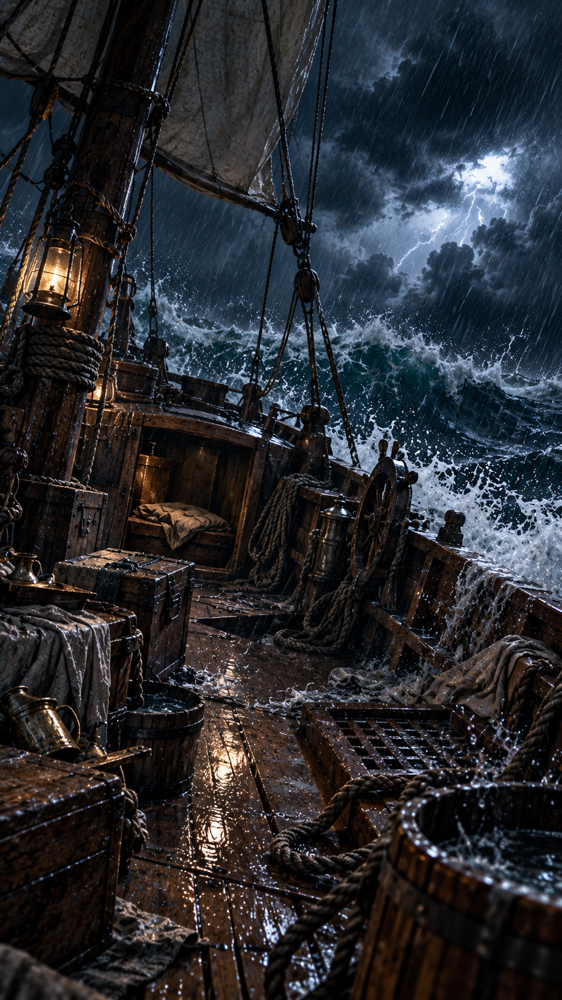
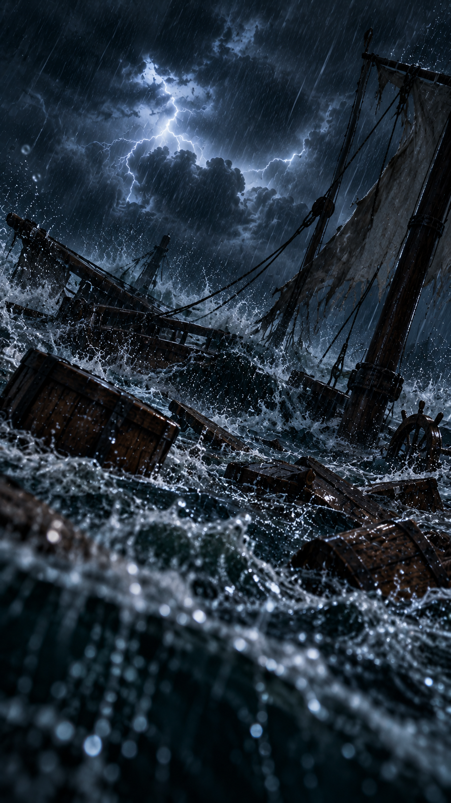

BIBLE ESCAPE · EP.02 · HARD
폭풍 속의 배
08:00
HARD MODE
세 사람은 같은 폭풍을 기록했다.
그러나 모든 기록이 같은 것을 말하지는 않는다.
성경 기록을 비교하고, 물건을 직접 움직이고, 숨겨진 단서를 찾아 탈출하세요. 오답은 30초를 잃습니다.

단서0/8
성구 확인0/9
힌트0/3
현재 상황
배가 크게 흔들린다. 눈에 보이는 것만 눌러서는 탈출할 수 없다.

TIME OVER · BAD ENDING
폭풍에 휩쓸렸습니다
00:00
눈앞의 파도에만 매달리는 동안
시간이 모두 지나버렸다.
같은 사건을 기록한 세 사람의 기록을 다시 비교해 보세요. 작은 차이가 다음 단서가 됩니다.

ESCAPED · HARD CLEAR
폭풍 속의 배
00:00
세 기록의 표현은 조금씩 달랐지만 마지막에 반복해서 드러난 것은 제자들의 믿음이었습니다.
마태복음 8:23-27 · 마가복음 4:35-41 · 누가복음 8:22-25
마태복음 8:23-27 · 마가복음 4:35-41 · 누가복음 8:22-25